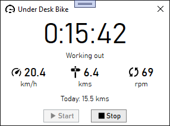

Hacking a $200 Under Desk Exercise Bike

Due to COVID, I haven’t been getting my usual amount of exercise this year. To help with that, I decided to take a chance and order an under-desk exercise bike to get some extra cardio. The bike I bought is decent: it has good tension, stays in place, operates quietly, and offers Bluetooth connectivity for tracking workouts.
If you’re considering getting one of these under-desk bikes, I wouldn’t automatically recommend it. With a standard desk, your knees will likely bump against it. However, my desk is designed for use with a keyboard tray, which I dislike. Instead, I keep my keyboard on top of the desk, raise my chair, and use a footrest. This setup makes my desk a good height for pedaling.
Bluetooth connectivity is important to me; being able to view and record speed and distance is a big motivator. Unsurprisingly, the bike comes with a companion phone app. It’s not a great app - it feels unpolished, has mediocre reviews, requires an account, and tries to upsell you on a subscription for classes. I can overlook all that, but sitting at my workstation, I don’t want to pull out my phone and navigate through several steps every time I want to work out. Nor do I want to leave my phone on and propped up on my desk for long periods. Lastly, I didn’t want all my workout data locked away in this app.
The solution was obvious - build my own desktop app!
The Project
I was inspired by this article: Unbricking a $2,000 Bike With a $10 Raspberry Pi. I figured my under-desk bike probably worked in a similar way, and if I could connect to it from my desktop, I could write my own application.
Objectives
- Display workout data in real time in a small window on the desktop.
- Record the workout data to a SQLite database for analysis, goal setting, and motivation.
- Automatically start and stop the app whenever I start pedaling, if possible.
Complications
- My desktop didn't have Bluetooth
- Zero experience working with Bluetooth LE
I solved the first issue by purchasing a USB Bluetooth dongle from Amazon. The second issue was something I would tackle with this project.
Step 1 - Research
The first step was to search for as much information as possible. This led me to a piece of software called nRF Connect. This Android app provides details about nearby Bluetooth devices, lets you connect to them, displays available profiles, and logs data. Using it, I learned that the bike uses a chip called Nordic UART, which essentially provides a serial connection over Bluetooth. This was great news - it suggested the bike was simply streaming bytes.
However, connecting with nRF Connect didn’t immediately provide any data. While I could connect and subscribe to changes, no data was being sent. This required further investigation.
The next step was to run the app and log all Bluetooth traffic to understand what was happening. After some more research, I found this article, which explains how to enable Bluetooth logging on an Android phone and download the logs for analysis. I enabled screen recording and Bluetooth logging on my phone, did a couple of workouts, and downloaded the logs.
Using Wireshark and comparing the logs with my recorded video, I discovered how the app communicates with the bike. The app sends a command packet, and the bike responds with one or more packets. During a workout, the app repeatedly sends a specific command, and the bike responds with data packets.
Step 2 - Connecting to the Bike
From the logs and Wireshark analysis, I identified six distinct commands sent by the app. My next task was to create a simple console application to connect to the bike, send these commands, and receive responses. This would test if I could replicate the app’s behavior on my desktop.
I chose .NET 5.0 on Windows for this project, as it provides access to the Windows Runtime Bluetooth API. Integrating this API is straightforward.
Step 3 - Interpreting the Data
The first command sent by the app, which I called the Connect command, must be sent before any others. After sending this command, subsequent commands must be sent at intervals of no more than one second, or the bike disconnects.
Start Command: f9 d0 00 c9
Response: f9 e0 00 d9
The next command, which I called the Hold command, appears to keep the connection alive. The bike responds with two identical packets each time this command is sent.
Hold Command: f9 d1 05 02 00 00 00 00 d1
Response #1: f9 e1 10 07 00 00 00 00 00 00 02 00 03 37 00 00 2a
Response #2: f9 e2 10 00 00 00 00 00 00 00 00 00 00 00 00 00 00 00 00 eb
Next were two one-time commands, which I named Info1 and Info2. These likely provide model or calibration data.
Info1 Command: f9 d3 0d 01 00 00 2c 00 00 3c 00 a0 00 00 00 00 e2 00 00 00
Response #1: f9 e3 01 00 dd
Response #2: f9 e3 0c 00 00 00 00 00 00 00 00 00 00 00 00 e8
Info2 Command: f9 d4 0f 02 00 00 00 00 00 00 00 00 00 00 00 00 1f 0f 0c 00
Response: f9 e4 02 00 00 df
At this point we can see the pattern emerge. Every command and response starts with the byte F9. The next byte contains the command or response type; the high nibble is D for commands and E for responses. The next byte is the length of the packet not including this header. The next byte after that appears to be some kind of checksum.
The most interesting commands come next. I call these the Start Workout and Continue Workout commands. The first command is sent when you start the workout and then app continuously sends the second command to sample data from the bike.
Start Cmd: f9 d5 0d 01 00 00 00 00 00 00 00 00 00 00 00 00 dc 00 00 00
Response #1: f9 e5 10 00 00 00 00 00 00 00 00 00 00 00 00 00 00 00 01 ef
Response #2: f9 e6 10 00 00 00 00 00 00 00 00 00 00 00 00 00 00 00 00 ef
Response #3: f9 e7 10 00 00 00 00 00 00 00 00 00 00 00 00 00 00 00 00 f0
Continue Cmd: f9 d5 0d 00 00 00 00 00 00 00 00 00 00 00 00 00 db 00 00 00
Response #1: f9 e5 10 00 09 00 03 00 07 00 00 00 99 00 00 53 00 00 01 ee
Response #2: f9 e6 10 00 00 00 00 00 06 00 00 00 00 00 00 00 00 00 2f 24
Response #3: f9 e7 10 00 00 00 00 00 00 00 00 00 00 00 00 00 00 00 00 f0
At this point I could start assembling and interpreting the data. The first thing I did was combine all the workout result packets together and lop off the header. Then I biked for 10 minutes collecting the data.
00 00 00 00 00 00 00 00 00 00 00 00 00 00 01 EF 00 00 00 00 00 00 00 00 00 00 00 00 00 00 00 EF 00 00 00 00 00 00 00 00 00 00 00 00 00 F0
01 00 00 00 00 00 00 00 00 00 00 00 00 00 01 F0 00 00 00 00 00 00 00 00 00 00 00 00 00 00 00 EF 00 00 00 00 00 00 00 00 00 00 00 00 00 F0
02 00 00 00 00 00 00 00 00 00 00 00 00 00 01 F1 00 00 00 00 00 00 00 00 00 00 00 00 00 00 00 EF 00 00 00 00 00 00 00 00 00 00 00 00 00 F0
03 00 00 00 01 00 00 00 BC 00 00 66 00 00 01 15 00 00 00 00 07 00 00 00 00 00 00 00 00 00 19 0F 00 00 00 00 00 00 00 00 00 00 00 00 00 F0
03 00 01 00 01 00 00 00 BB 00 00 65 00 00 01 14 00 00 00 00 07 00 00 00 00 00 00 00 00 00 19 0F 00 00 00 00 00 00 00 00 00 00 00 00 00 F0
04 00 01 00 02 00 00 00 BE 00 00 67 00 00 01 1B 00 00 00 00 07 00 00 00 00 00 00 00 00 00 25 1B 00 00 00 00 00 00 00 00 00 00 00 00 00 F0
05 00 01 00 03 00 00 00 C1 00 00 69 00 00 01 22 00 00 00 00 07 00 00 00 00 00 00 00 00 00 2D 23 00 00 00 00 00 00 00 00 00 00 00 00 00 F0
06 00 02 00 04 00 00 00 C3 00 00 6A 00 00 01 28 00 00 00 00 07 00 00 00 00 00 00 00 00 00 32 28 00 00 00 00 00 00 00 00 00 00 00 00 00 F0
07 00 02 00 06 00 00 00 C1 00 00 69 00 00 01 28 00 00 00 00 07 00 00 00 00 00 00 00 00 00 36 2C 00 00 00 00 00 00 00 00 00 00 00 00 00 F0
07 00 03 00 06 00 00 00 C1 00 00 69 00 00 01 29 00 00 00 00 07 00 00 00 00 00 00 00 00 00 36 2C 00 00 00 00 00 00 00 00 00 00 00 00 00 F0
08 00 03 00 07 00 00 00 BE 00 00 67 00 00 01 26 00 00 00 00 07 00 00 00 00 00 00 00 00 00 39 2F 00 00 00 00 00 00 00 00 00 00 00 00 00 F0
09 00 03 00 08 00 00 00 BA 00 00 65 00 00 01 22 00 00 00 00 07 00 00 00 00 00 00 00 00 00 3B 31 00 00 00 00 00 00 00 00 00 00 00 00 00 F0
0A 00 04 00 09 00 00 00 B0 00 00 5F 00 00 01 15 00 00 00 00 07 00 00 00 00 00 00 00 00 00 3C 32 00 00 00 00 00 00 00 00 00 00 00 00 00 F0
0B 00 04 00 0A 00 00 00 B5 00 00 63 00 00 01 20 00 00 00 00 07 00 00 00 00 00 00 00 00 00 3D 33 00 00 00 00 00 00 00 00 00 00 00 00 00 F0
0B 00 05 00 0A 00 00 00 B8 00 00 64 00 00 01 25 00 00 00 00 07 00 00 00 00 00 00 00 00 00 3D 33 00 00 00 00 00 00 00 00 00 00 00 00 00 F0
0C 00 05 00 0C 00 00 00 BB 00 00 66 00 00 01 2D 00 00 00 00 07 00 00 00 00 00 00 00 00 00 3E 34 00 00 00 00 00 00 00 00 00 00 00 00 00 F0
0D 00 06 00 0D 00 00 00 BF 00 00 68 00 00 01 36 00 00 00 00 07 00 00 00 00 00 00 00 00 00 3F 35 00 00 00 00 00 00 00 00 00 00 00 00 00 F0
0E 00 06 00 0E 00 00 00 BF 00 00 68 00 00 01 38 00 00 00 00 07 00 00 00 00 00 00 00 00 00 40 36 00 00 00 00 00 00 00 00 00 00 00 00 00 F0
0F 00 06 00 0F 00 00 00 BF 00 00 68 00 00 01 3A 00 00 00 00 07 00 00 00 00 00 00 00 00 00 41 37 00 00 00 00 00 00 00 00 00 00 00 00 00 F0
0F 00 07 00 0F 00 00 00 BE 00 00 67 00 00 01 39 00 00 00 00 07 00 00 00 00 00 00 00 00 00 41 37 00 00 00 00 00 00 00 00 00 00 00 00 00 F0
...
Observations
- Lots of constant zeros and a few constant values that can be ignored.
- Some values are bytes and some values are words.
- Some values increased continuously while others were directly related to how fast I was pedaling. These latter values were also zero when not pedaling.
Based on these observations I wrote code the break the data down into 9 different byte and word fields. I ran my console app again during a workout to collect these values into CSV and then threw it into Excel for analysis. Most of the values became pretty obvious by looking at them. The slowest part for me was figuring out the bike sends imperial measurements instead of metric. The 9 fields in order:
- The current second of workout. This value goes from 0 to 59 over and over. If you sample faster than every second this value will stay the same for multiple samples.
- The distance in hundredths of a mile.
- The workout time in seconds. This starts at zero and continues increasing for as long as I am pedaling. When I stop pedaling this value will stay the same.
- Speed in tenths of a mile per hour.
- Rotations per minute.
- Unknown (one byte). Seems related to workout speed but if not moving it increases by one every second and periodically resets to a value and then keeps counting.
- A speed value from 0 to 9.
- 2 other unknown byte values. Both appears to be an average value related to speed over the whole workout but exactly what it represents I don't know.
With these observations, I decided I only needed 3 commands: The Connect command, the Start Workout command, and the Continue Workout command. I also didn't need to understand the commands; I just needed to send those bytes in that order.
Step 4 - Putting It All Together
The final step was to organize my work into a consistent API and then create a WPF application for the user interface. This type of application is perfect for MVVM. I used Entity Framework Core to quickly implement SQLite storage for workout data.

Final App Features:
- Displays workout time, current speed, current distance, and current RPM during the workout.
- At the end of the workout, the values switch to the averages of the workout.
- Automatically detects the Bluetooth activating on the bike (it's turned on by pedaling). This starts the workout and pops up the window.
- Pauses the workout when pedaling stops. The workout time will blink while paused. After one minute of being paused the workout ends automatically.
- Start and Stop buttons for manually controlling the workout.
- The daily distance is shown for goal setting.
- Clicking the X to close the app minimizes it to the system tray.
- Includes system tray icon with context menu.
- Window can be set to Always on Top (right click the window for context menu).
- Option to have the application automatically start on login.
- Saves the workout information and all the samples from the bike to a SQLite database.
Conclusion
The app works great and is everything that I hoped it could be. Now it's just a matter of seeing how far I can pedal.